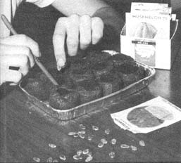

Every gardener worthy of the name knows that the garden is the perfect recycling center for almost any organic waste. I'd be willing to bet, for instance, that - if you have your own garden and aren't reading this article just to enjoy the beauty of my prose - you also have a compost pile to which you faithfully cart grass clippings, kitchen garbage and any other suitable material for the enrichment of your vegetable patch.
Perhaps, though - even if you're so used to composting that you look at cooking scraps and think "fertilizer"you haven't yet formed the useful habit of recycling inorganic household waste into real or potential garden equipment. True, tin cans and plastic meat trays may not seem much like "tools" at first glance . . . but my own experience has convinced me that every discard is usable and some are downright necessary.
I've found that the secret of turning trash into tools is to start collecting handy-looking objects well before they're actually needed. (They won't be in the way if they're stored neatly on shelves or in boxes.) That way, when you come to use the junk items, you'll have a good supply ready.
What sort of trash should you collect? That's easier to decide if you have a few potential uses in mind. You'll develop your own favorite tricks as you go along, but - just to get you started - here's a Garden Recycling List to glance at before you toss anything out.
Do you know that reflected light has been proved effective in helping to repel plant-eating insects, including aphids? Or that some plants enjoy improved health and productivity when they're provided with additional reflected sunlight?
These bits of information are all the more encouraging when you realize that no special, expensive equipment is needed to give your plants the benefits of reflected light. In fact, many of us throw out odds and ends every day that would be perfect for this use.
Consider those shiny metal lids cut from food cans, for instance. I save mine and use them for reflectors by placing them on the ground under the foliage of sunlight-loving plants like tomatoes and peppers. As a result, I get bigger, better plants and fruit and have much less trouble with insects.
OK, what about the big squares of aluminum foil that have already been used once in the kitchen? I save mine and wrap them around small rocks which I distribute in the strawberry beds. That may sound like a peculiar thing to do, but it really does hasten the ripening of the berries even in cooler, partly shaded areas. Why? Because the rocks absorb and hold heat during the day and release it around the plants during the cool nights of the late spring ripening period.
The shiny stones have another use, too. Like the tin lids among the peppers, the foil wrapping bounces the sunlight up to the undersides of the leaves . . . much to the distaste of a good many of the insects that hide there.
Does it make sense to throw away hundreds of ideal planting containers - in the form of old tin cans - and then spend hard-earned dollars to buy less-than-perfect commercial pots from the garden store?
Not to me, it doesn't. I save all old food tins and figure that - by the time I've used them a year or two - every one has been worth somewhere between a dime and a quarter.
To prepare smaller cans as plant starters, remove both the tops and the bottoms, place the containers in wooden or metal boxes and fill each cylinder three-quarters full of common garden soil. You can even use easily compacted, claylike earth . . . because the floors of the boxes keep the soil in the holders while the open ends permit excess water to flow off. In fact, tin cans used this way are the best solution to he drainage problems that occur with "heavy" starting soils.
At transplanting time, thoroughly soak the soil in the cans. Then give the container just a gentle shake, and out will come the root-filled earth. Or you can plant cans and all, if you like, because the roots will spread through the open bottom into the surrounding soil.
Here's another technique you can try when you set out your home-canned plants: Shove the clump of roots and soil partway down through the bottom of the holder and set it in the earth so that the top ring of the can stands above ground level. This method encourages the root system to spread out to the sides at once, and the can's metal wall around the stem wards off cutting insects that destroy so many tender young transplants.
Once your seedlings are out in the open they may need extra protection for awhile. For this job, two and three-pound coffee cans with replaceable plastic lids are real winners. (Yes, save the lids, too.) Set the containers , open at both ends , around spring transplants to guard them from cold, wind, animals and misdirected human feet. Then, when frost threatens, cut ventilation holes in the plastic covers and close the cans for super-shelter with minimal effort.
Since many large cans come without special tops, save plastic food bags , like bread wrappers , to slip over such tins on cold nights. The combined use of metal containers and plastic film provides good protection . . . but keep in mind that this double shelter can create a hot, humid environment for the plants inside. Be sure to pierce the bags for air circulation and to remove them at the slightest warming trend. Only a little too much heat can quickly ruin delicate young plants.
A milk carton, cut to form a drawer, makes a handy cabinet for filing seed packs according to their appropriate needs.
Those bigger tin cans that do such a good job of sheltering your plants in the spring will also help you water themlater on when the hot, dry weather sets in. Remove both ends of the containers and sink them two-thirds deep into the ground near tomatoes, peppers, squash or whatever. The water you place in these excellent reservoirs will head directly for the plants' roots with no waste or erosion . . . and, best of all, you'll save hours of watering. Just fill the cans once a day and laugh at droughts and hot spells.
We live in an age of prepackaging which - as we all know - means tons of additional trash to dispose of. Before you toss that wrapping away, though, stop to think about who's paying for those millions of dollars' worth of valuable packaging materials that are used annually. You foot that bill, because - when you buy readypacked meat, vegetables, fruits and baked goods - the cost of the paper and plastic is added to the price of the food. Throw out the containers and coverings and you throw away your money.
It makes sense, then, to use those extras you purchase willy-nilly along with your food. For example, take the aluminum and plastic trays that often hold meats, vegetables and baked goods. Why throw them away when hundreds can be stacked and stored in a few square inches of shelf space to await a second career in dozens of gardening uses?
For instance, if you start seeds in peat pots or pellets, you can set the containers on the prepackaging trays to contain drainage and splashed water. Those unsolicited "gifts" from the supermarket also come in handy to protect table tops from potted plants . . . or, if you have a decorator's eye, you can paint the trays bright colors and use them as planter mats.
One of my favorite forms of reusable food packaging is the paper milk carton, which has a thousand and one uses in gardening. Did you know, for instance, that these boxes can be convenient tools to help you in your soil improvement program?
You're already-I hope - giving your food residues to the plants instead of to the trash can or a costly mechanical disposer ("waster" would be a better name). If you are, you'll find that garbage-toting is neater and more pleasant if you store clean kitchen wastes temporarily in milk cartons. Later, when you have time, you can distribute the leavings in the garden rows and cover them with a thin layer of soil. This way you'll rapidly build an environment that favors soil microbes and tilth-building earthworms.
Many gardeners faithfully add their helpful kitchen scraps to the soil during the warm months, but fail to do so in the winter when the garden is snow-covered or inaccessible. If your climate discourages expeditions to the vegetable patch in cold weather, just fill milk cartons with garbage and staple them shut. Then put the "bricks" of organic matter in boxes and store them in unheated garages or sheds, where the wastes will freeze and keep perfectly until spring . . . exactly when they're needed for use during tilling and planting.
By the way, while you're preparing your garbage for use at planting time, remember to keep coffee grounds separate and store them in milk containers of their own. Then, in the spring, when you're planting small seeds, thoroughly mix a cup of grounds with the contents of each packet so that the seeds will automatically be distributed better as you sow.
The common milk carton can also be one of your best garden tools in another way during spring and summer planting. Did you ever make a point of ordering seeds of some unfamiliar variety, and then forget to put them in at the right time because the packet was tucked away in a "safe" place? This needn't happen if you use the dairy industry's leftovers to organize your future flowers and vegetables.
Cut out one side of each of several milk cartons and use a different one of these "drawers" for storing each class of crop: one for roots, one for vines, another for flowers. Sort your files according to appropriate planting times and label them "Earliest Spring Planting", "Late Spring Planting", "Summer Planting", etc. This system is convenient and time-saving . . . and you won't forget to put in that row of oyster plant or parsnips when the seeds are "filed" along with more commonplace varieties such as carrots, turnips and onions.
Nowadays few of us are so unthinking as to burn fallen leaves or clipped grass. These organic materials usually go directly into the garden. If immediate use isn't practical or conven ient, however, you can store such treasures in the big double shopping bags supermarkets "give" you. Then, when you need organic mulch, you'll have it handy.
Paper, of course, needn't be just a container for mulch. Magazines, newspapers, old cardboard boxes and paper sacks piled thickly between rows of plants make an excellent moisture-saving cover and look neat when weighted down with stones. How many pounds of wastepaper have we thrown away or burned . . . and how many times have we complained later because we didn't have enough material to mulch the garden adequately during a scorching summer?
When you think of all the gardeners who carefully save their yard-cleaning trash for mulch, it's surprising to find how many burn or haul off the useful by-products of tree-pruning. Instead of throwing away the branchy ends of limbs, why not save them to set upright beside rows of peas as an effective and natural-looking support for the vines? Any long sticks you can salvage are useful, too, for staking up tomato plants and pole beans. Remember, you've got to save items like this when they come to hand, so you'll have enough later when you need them.
I hope I've convinced you by now that a little ingenuity in the use of waste materials will help you save many dollars each year and improve your gardening results at the same time. You're not the only person who'll benefit from your salvaging efforts, however . . . you'll also be lightening the junkman's load (and Mother Earth's, too). As long as we live in a society that's burdened with the problem of handling endless tons of unwanted wealth, we all need to take a closer look at any article we're about to throw away.
Of course, there are endless ways for any imaginative person to reuse items that are usually considered worthless. I believe, however, that gardening is hard to beat as a hobby for people who frown on pollution . . . for what other equally rewarding activity offers so many chances to convert trash into tools?
|
A milk carton, cut to form a drawer, makes a handy cabinet for filing seed packs according to their appropriate needs. |
 I nabbed this plastic shoe box from a neighbor's trash and found it a perfect planter for starting plants indoors. With the lid shut it keeps the soil moist while the seeds inside germinate. |
Recycled tin cans and plastic food bags work just as well as expensive commercial plant protectors when young plants are threatened by killing frosts. |
|
All kinds of normally discarded pre-packaging materials, like the aluminum tray pictured here, have proven useful in holding individual planting containers. |
Those aluminum trays in which baked goods are prepackaged make handy planting containers. You can stack hundreds of 'em in a few square inches of shelf space. |
All kinds of so-called ""junk"" articles, like the tin cans, damaged bread boxes and milk cartons pictured here, are valuable aids in growing garden transplants. |
|
Depending on how they're cut, cardboard milk cartons are probably the most helpful discard tools in my garden after tin cans. Cut at an angle, they make superior feed scoops. They also become excellent plant protectors when you cut off their bottoms and leave the pouring spout open for ventilation. |
|
|